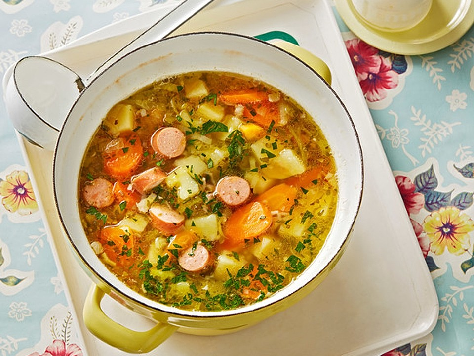

KARTOFFELSUPPE

INGREDIENTS
- 6 slices bacon, diced
- 1 onion, chopped
- 2 cloves garlic, minced
- 6 cups chicken broth
- 1 1/2 pounds potatoes, peeled and diced
- 1 teaspoon dried thyme
- 1 bay leaf
- Salt and pepper, to taste
- 1/2 cup heavy cream
- 2 tablespoons chopped fresh
parsley, for garnish
INSTRUCTIONS
- In a large pot or Dutch oven, cook the diced bacon over medium heat until crispy, about 8-10 minutes.
- Using a slotted spoon, transfer the cooked bacon to a paper towel-lined plate and set aside.
- Add the chopped onion to the bacon fat and cook until softened, about 5-7 minutes.
- Add the minced garlic and cook for an additional minute, stirring frequently.
- Add the chicken broth, diced potatoes, dried thyme, bay leaf, salt, and pepper to the pot and bring to a boil.
- Reduce the heat to medium-low and let simmer until the potatoes are tender, about 20-25 minutes.
- Remove the bay leaf from the soup and use an immersion blender to puree the soup until smooth
and creamy.
- Stir in the heavy cream and let simmer for an additional 5 minutes.
- Taste and adjust seasoning as needed.
- To serve, ladle the soup into bowls and sprinkle with the crispy bacon and chopped fresh parsley.